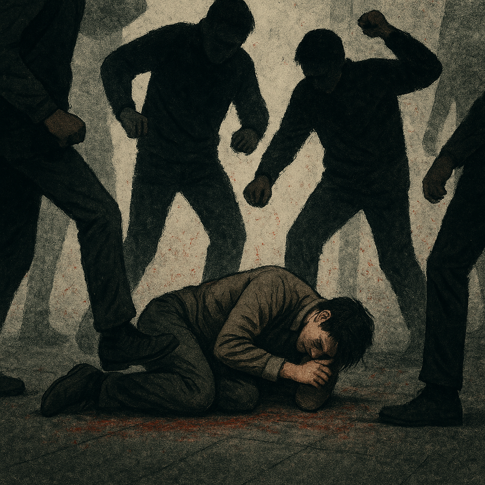
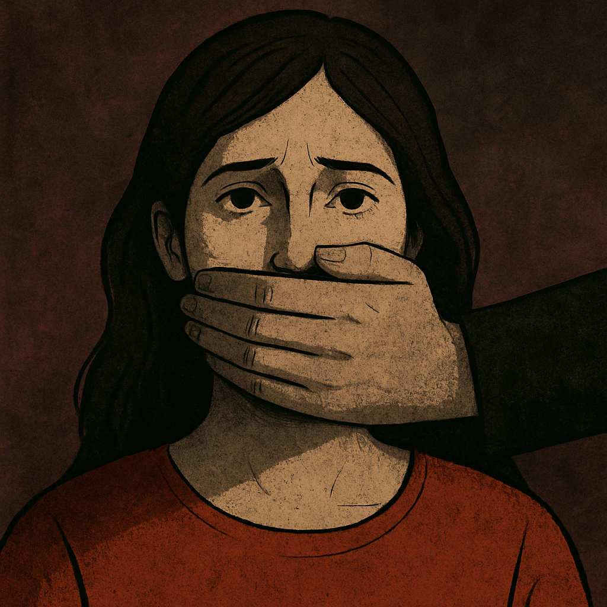
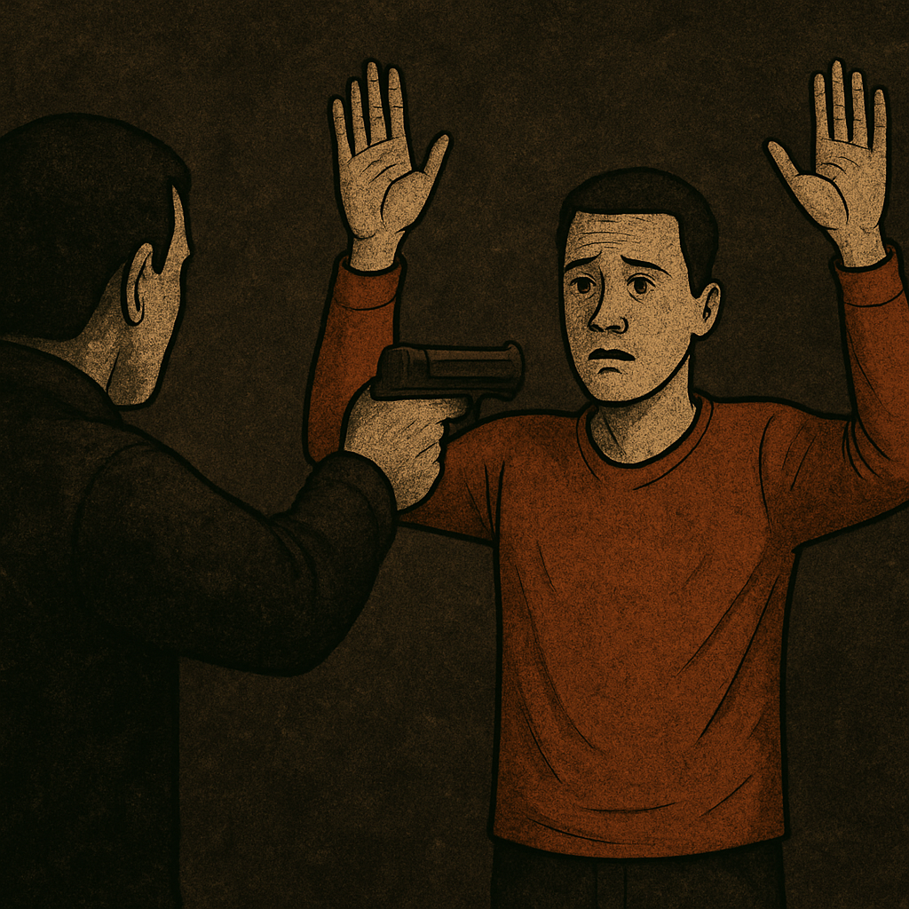

Welcome to the
Global Violence Tracker
This webpage displays the level of violence in the world
Violent Offences
Registered Violence Offenses
0
Every three seconds, approximately four violent crimes are committed worldwide. However, these figures reflect only officially recorded cases and likely represent just a fraction of the true scale of violence.
Research from European Union countries indicates that only 13% to 25% of women who experience gender-based violence report it to the authorities. The vast majority of cases remain hidden — not only from institutions but often from society as a whole.

Research from European Union countries indicates that only 13% to 25% of women who experience gender-based violence report it to the authorities. The vast majority of cases remain hidden — not only from institutions but often from society as a whole.
Possible Violence Offenses
0
There are several reasons why people choose not to report crimes.
- Psychological factors: feelings of shame, fear, or cognitive distortions — the belief that “this is normal” or “how things are supposed to be.”
- Social reasons: victim-blaming, cultural norms, and societal expectations often discourage victims from speaking out. In many communities, silence becomes the default response.
- Institutional barriers: lack of trust in the police, system overload, or the simple inaccessibility of formal reporting mechanisms.
Intentional Homicide
Registered Homicides
1
The rate of intentional homicides has remained relatively stable over the last 15 years, ranging from 416,965 to 451,046 cases per year. This means that approximately 50 murders occur every hour worldwide. However, the geography of violence matters greatly. Some regions are far safer than others. For example, in Oceania, there are on average 3 to 4 homicides per day, while in the Americas, that number is around 412 homicides per day. The homicide rate in the Americas is nearly five times higher than in Oceania.
×
Press to continue
×
Unfortunately, violence cannot be stopped by pressing a button.
But you can:
- Stay mindful of the amount of violence in the world, especially the unregistered cases.
- Do not use violence to achieve your goals.
- Remember that violence is deviant and non-normative behavior.
- Review additional recommendations on what to do when encountering violence, for example Safety During a Violent Encounter.